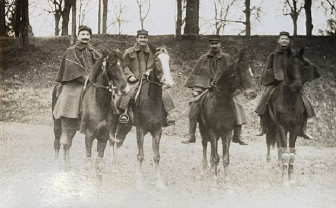
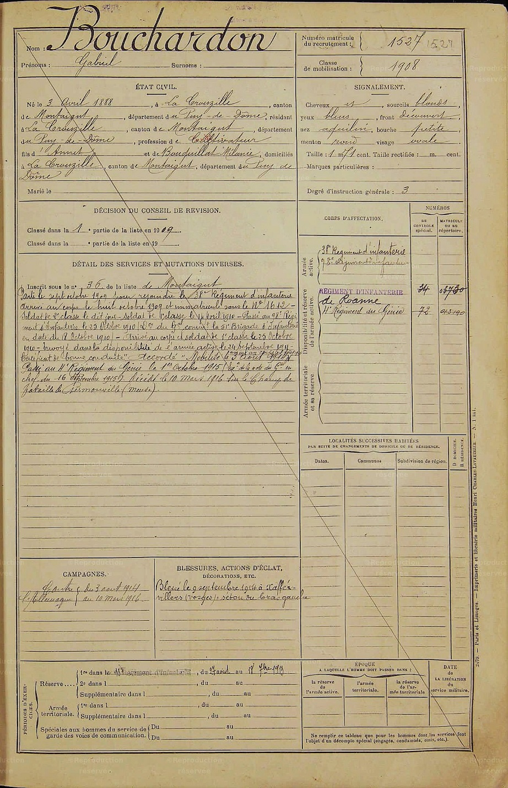

Gabriel à cheval

Livret militaire de Gabriel
Gabriel
Gabriel est né le 3 Avril 1888 au hameau des Raynauds, commune de la Crouzille. Il est l’âiné des garcons. A ce titre, c’est lui qui tracera la voie pour ses deux frères. Tragiquement iI ne reviendra pas du conflit,
alors que ses deux frères “suffisament” blessés échapperont à ce funeste destin.
Il part au service militaire le 7 Octobre 1909 pour rejoinder le 38ème Régiment d’infanterie basé à Lyon,
en tant que soldat de 2ème classe. Il devient soldat de 1ère classe le 14 Avril 1910 et passe au 98ème Régiment d’Infanterie
(51ème Brigade) le 25 Octobre 1910. Le 98ème est basé à Roanne
Son service militaire s’achève le 24 Septembre 1911, date à laquelle il est envoyé dans la disponibilité de l’armée active. Ses états de service militaire mentionnent qu’un certificat de bonne conduite lui est attribué.
Mobilisé le 3 Août 1914, il rejoint donc le 98ème Régiment d’Infanterie.
Le Régiment se met en marche dès le 6 Août et s’installe près d’Epinal. Sa mission est d’entrer en Lorraine, ce qui est fait le 17 Août. Le 20 Août marque le premier jour de combat du régiment avec de lourdes pertes suivi
d’une
retraite jusqu’à St-Pierremont. Les hostilités reprennent dès le 25 Août aux environs de Xaffévillers (Vosges).
Gabriel est blessé au bras gauche le 9 Septembre 1914 à Xaffévillers.
Il est rapatrié à Lyon et commence une très brève période de convalescence. A la fin du mois d’Octobre, Gabriel est envoyé à nouveau au combat et cette fois-ci rejoint le 4ème Régiment du Génie, toujours rattaché au 98ème
Régiment d’Infanterie.
Le Régiment est alors basé au Bois des Loges, à proximité de Tilloloy dans la Somme. Le Bois des Loges a été le théatre d’une bataille effroyable au début du mois, et c’est à cette époque que commence la guerre de tranchées.
En
tant que sapeur du génie, Gabriel travaille activement à la construction des tranchées et du système de défense d’Octobre 1914 à Octobre 1915.
Du 1er Octobre à fin Novembre, le Régiment est déplacé d’une manière presque continue derrière le front entre Montdidier et Démuin. De Novembre à fin Janvier 1916, le Régiment retourne au front dans le secteur de Ribécourt
puis
est transporté par chemin de fer au sud de la forêt de Compiègne. S’ensuit une longue marche jusqu’au sud de l’Aisne, dans les villages de Croutoy, Mortefontaine et Chelles. Les soldats sont alors au repos dans les cantonnements jusqu’á fin
Février.
L’ordre est alors donné au Regiment de rejoindre la region de Verdun où les allemands s’apprêtent à lancer une offensive definitive.
Gabriel meurt le 10 Mars 1916 à la bataille de Verdun, au Bois Bourrus au lieu-dit Germonville sur la commune de Fromeréville-Les-Vallons. Il a 28 ans.
Il recoit la Croix de Guerre à titre posthume avec la citation suivante :
"Sapeur d'élite, sur le front depuis le début. A donné de sa bravoure et de son énergie maints exemples dans des circonstances où il n'a du qu'à la chance d’échapper à la mort. Mort pour la France, à Germonville, le 10
mars
1916, aux plus fortes attaques de Verdun. A été cité."